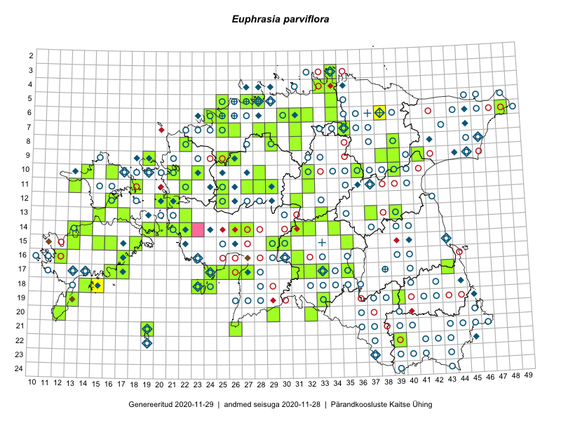

Euphrasia parviflora
Uuendatud: 2016-12-01
Kaardile koondatud taksonid: Euphrasia parviflora Schag.

Kaart põhineb 5 kirjel.
Viited andmebaasikirjetele
Kaardile koondatud taksonid: Euphrasia parviflora Schag.
Kaart põhineb 5 kirjel.
Viited andmebaasikirjetele